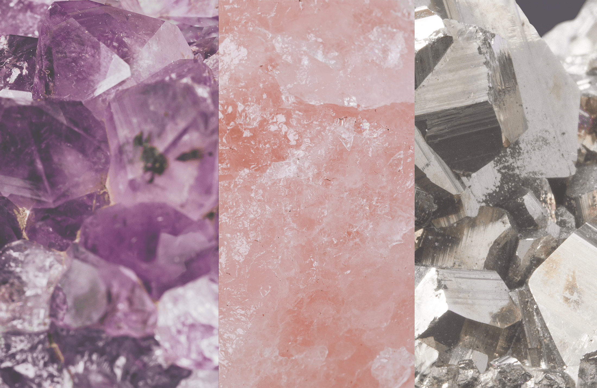
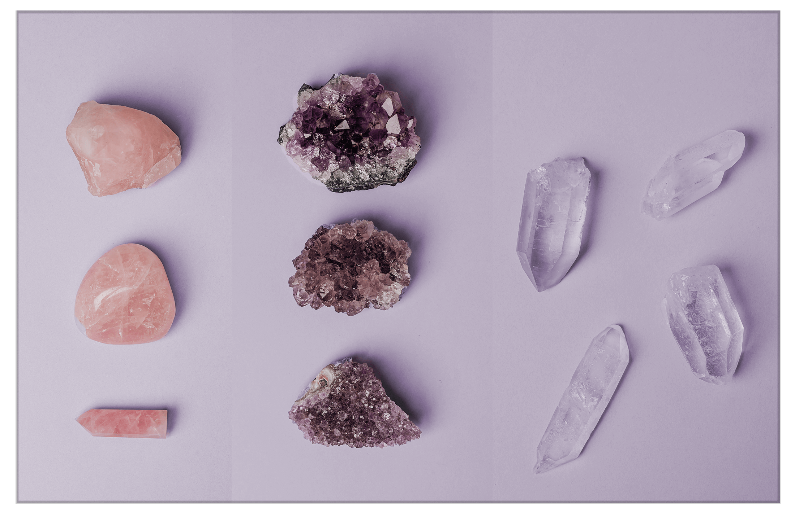
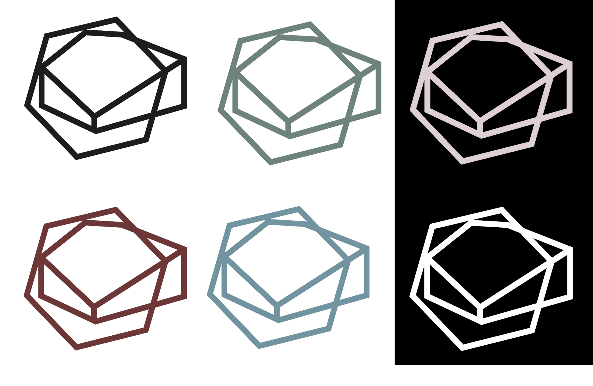
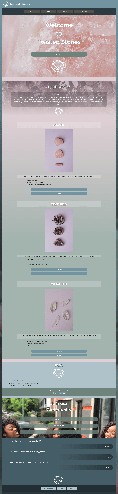

Enveloping the user in gentle texture. Giving the whole site a vibe.
I wanted to incorporate a lot of crystal texture to add interest to the single-page site without overwhelming the user. This is also why there is a subtle color gradient as part of the page overall, gently guiding the user toward the different stone products.
Adding more depth the more you scroll. Creating interest in simple interactions.
This is one of the first instances I incorporated a user story from start to finish, considering exactly what the user would be thinking scrolling down the page. The stones move from lighter to stronger in texture and weight intensity as the user flows through the options.
 Stepping out of my comfort to create something comforting for others.
A lot of my work before this point had been vibrant, swaying toward loud in nature so this project was both difficult and refreshing. Looking back I’m glad I challenged myself to try a style outside of my comfort zone. If I were to redesign this website now I would include stones spilling across the page with animations or videos telling about each product and possibly some shimmer effects to reflect the polish of the stones themselves.

Need something
creative?
hit me up
Or keep this tab open forever, you'll come back to it later... right?
Name of commenter, Title of commenter